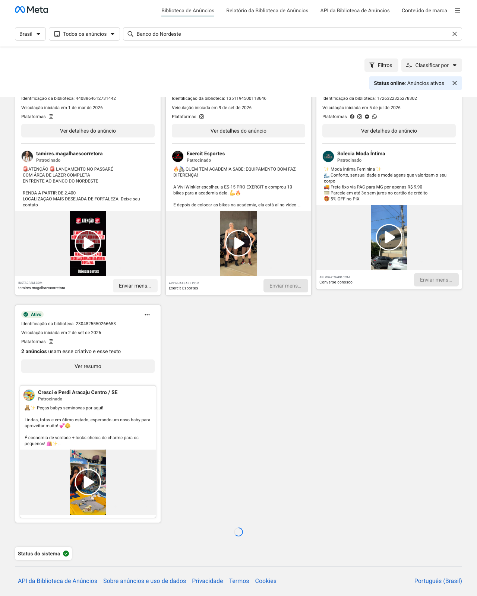

① Evento central: Eleições gerais 2026 — 2º turno 重点事件：2026 大选 · 第二轮（10/25 投票）⏱ 2º turno em 25/10 · faltam 8 dias
Quem anuncia e quanto gasta — dados oficiais 竞选广告投放榜 · 官方精确数据
R$ 461.696.685
US$ 90,071,341
Gasto em anúncios eleitorais竞选广告花费
R$ 656.598.447
US$ 128,094,276
Total da biblioteca (inclui temáticos)全库含议题广告
5.635
Candidatos anunciando在投候选人
894.756
Anúncios eleitorais竞选广告条数
Fonte: Relatório oficial da Biblioteca de Anúncios · janela Últimos 90 dias
(2026-07-17 → 2026-10-14) · valores exatos, não faixas · câmbio US$ 1 = R$ 5.1259
数据源：Meta 广告库官方报告，精确金额（非区间）；窗口 2026-07-17 → 2026-10-14
Corrida presidencial总统候选人投放榜 · 11 位
11 candidaturas somando R$ 21.699.943 — 4.7% do gasto eleitoral.
11 位总统/副总统候选人，合计 R$ 21.699.943，占竞选广告总花费的 4.7%。
R$ 479.093 · $93,465
Onde está o dinheiro: por cargo按竞选职位
DEPUTADO FEDERAL联邦众议员 · 2390 cand.
R$ 206.489.229 · $40,283,507
DEPUTADO ESTADUAL州众议员 · 2822 cand.
R$ 115.617.383 · $22,555,528
SENADOR参议员 · 160 cand.
R$ 60.683.750 · $11,838,653
GOVERNADOR州长 · 92 cand.
R$ 50.572.782 · $9,866,127
PRESIDENTE总统 · 10 cand.
R$ 21.553.233 · $4,204,770
DEPUTADO DISTRITAL联邦区议员 · 145 cand.
R$ 6.098.855 · $1,189,812
VICE-GOVERNADOR副州长 · 15 cand.
R$ 534.743 · $104,322
VICE-PRESIDENTE副总统 · 1 cand.
R$ 146.710 · $28,621
Maiores anunciantes投放金额 Top 15
R$ 3.044.149 · $593,876
R$ 2.145.761 · $418,612
R$ 1.846.076 · $360,147
R$ 1.756.192 · $342,611
Dois links por candidato — Nome ↗ = ativos agora (sem filtro de data);
«no período» = a janela 2026-07-17 → 2026-10-14, mesma base do valor em R$.
每位候选人两个链接：点姓名→该主页现在在投的广告；点「no período」→窗口内全部（与金额同口径，含已停投）。
三点注意：① 金额是窗口累计，含期间已跑完的广告，所以页面上多数标 Inativo 属正常； ② Report 数据截至 2026-10-14，候选人仍在持续上新广告，最新在投的不计入本表金额； ③ 页面条数通常多于本表——页面列该主页所有出资方的广告，本表只算候选人竞选委员会那部分（政党出资走 Fundo Partidário，不计入）。
三点注意：① 金额是窗口累计，含期间已跑完的广告，所以页面上多数标 Inativo 属正常； ② Report 数据截至 2026-10-14，候选人仍在持续上新广告，最新在投的不计入本表金额； ③ 页面条数通常多于本表——页面列该主页所有出资方的广告，本表只算候选人竞选委员会那部分（政党出资走 Fundo Partidário，不计入）。
Criativos e formatos — amostra ad-a-ad 创意与形式 · 逐条抓取样本
Esta seção mostra como são os anúncios (criativo, texto, formato). Para valores e ranking, veja a seção acima.
本节用于看广告长什么样（创意、文案、形式）。金额与排名以上方投放榜为准。
🎨 Composição da amostra de criativos
创意样本构成 —— 164 anúncios coletados; termos: eleições 2026 / eleição 2026 / voto / campanha eleitoral / Lula / Tarcísio / Flávio Bolsonaro / Ciro Gomes / Ratinho Junior / Ronaldo Caiado / PT / PL / PSDB / União Brasil / Progressistas / Republicanos / Governo Federal
本期抓取 164 条，用于看创意与文案，不用于金额结论
- Ativos / inativos在投·已停: 49 ativos · 115 inativos;
67 pagadores distintos
49 条在投 · 115 条已停；共涉及 67 个不同出资方
- Tipos de anunciante广告主类型分布: Partidos 政党 4 · Governo 政府机构 2 · Comitês eleitorais (candidatos) 候选人竞选委员会 144 · Outros 其他 14
- Período时间跨度: 2025-11 → 2026-10
- Observações特征观察: justiça eleitoral (TSE/TRE) e órgãos de governo concentram anúncios de
orientação ao voto e avisos de conformidade; partidos e candidatos concentram anúncios temáticos.
选举司法(TSE/TRE)与政府机构以「投票指引/合规告知」类广告为主；政党/候选人以议题宣传为主。
⚠️ 本样本为 17 个关键词 × 每词上限的便利抽样，覆盖率不足全库 1%，
不可用于推断市场规模或排名；金额与排名见上方「投放榜」（官方 Report 全量精确数据）。
Criativos e posicionamentos (grade da Biblioteca de Anúncios)创意/广告位截图


Andre MaldonadoAtivoAnúncio eleitoral declarado 已申报竞选广告 · 💰R$1,5 mil a R$2 mil
Pago por 出资方: Eleicao 2026 Andre Luiz de Paula Maldonado Deputado Federal - 68.237.488/0001-09
Ao lado de Tarcísio de Freitas! 🇧🇷 🗳️ Tarcísio é 1️⃣0️⃣ 🗳️ André Maldonado é 1️⃣1️⃣1️⃣4️⃣ para Deputado Federal. 📍 Bauru e região presentes nas eleições de 2026. Conheça nossas propostas, acompanhe nosso trabalho e participe desse debate sobre o futuro da nossa região. #AndréMaldonado #1114 #Tarcísio10 #Bauru #CentroOestePaulista SãoPaulo Eleições2026 Impressões: 900 mil a 1 mi
与塔尔西济奥·德·弗雷塔斯并肩！🇧🇷 🗳️ 塔尔西济奥是1️⃣0️⃣ 🗳️ 安德烈·马尔多纳多是1️⃣1️⃣1️⃣4️⃣竞选联邦众议员。📍 包鲁及周边地区将参与2026年选举。了解我们的主张，关注我们的工作，参与这场关于本地区未来的讨论。#AndréMaldonado #1114 #Tarcísio10 #Bauru #CentroOestePaulista SãoPaulo Eleições2026 曝光量：90万至100万
João RomaAtivoAnúncio eleitoral declarado 已申报竞选广告 · 💰R$125 mil a R$150 mil
Pago por 出资方: ELEICAO 2026 JOAO INACIO RIBEIRO ROMA NETO SENADOR
Tem dupla que combina. E tem dupla que está pronta para fazer a Bahia avançar. 💙 Com ACM Neto no Governo e comigo no Senado, a Bahia ganha força, alinhamento e capacidade para transformar vontade de mudança em trabalho de verdade. Neto sabe com quem pode contar. É 44 para governador e 222 para senador! #JoãoRoma #Bahia 0:00 / 0:33
有的组合很般配，有的组合已经准备好让巴伊亚州前进。💙 有ACM·内托在州政府、我在参议院，巴伊亚州将获得力量、协同和将变革意愿转化为实际工作的能力。内托知道他可以依靠谁。44号投州长，222号投参议员！#若昂·罗马 #巴伊亚 0:00 / 0:33
Gustavo GayerAtivoAnúncio eleitoral declarado 已申报竞选广告 · 💰R$45 mil a R$50 mil
Pago por 出资方: ELEICAO 2026 GUSTAVO GAYER MACHADO DE ARAUJO SENADOR
Dia 4 de outubro VOTE 222 para Senador - Gustavo Gayer - Pesquisa realizada pelo Instituto Veritá a pedido Sistema de Comunicação Pantanal LTDA / REDE BRASIL DE TELEVISÃO. A margem de erro é de 2,5 pontos percentuais. O nível de confiança é de 95%. Período: 20 a 24 de setembro de 2026. Amostra: 1.525 eleitores. Registro GO-08703/2026 | R-08745/2026. 0:00 / 0:39
10月4日投票222给参议员 - Gustavo Gayer - 调查由Veritá研究所应Sistema de Comunicação Pantanal LTDA / REDE BRASIL DE TELEVISÃO委托进行。误差范围为2.5个百分点。置信水平为95%。时间：2026年9月20日至24日。样本：1，525名选民。登记号 GO-08703/2026 | R-08745/2026。0:00 / 0:39
Ciro GomesAtivoAnúncio eleitoral declarado 已申报竞选广告 · 💰R$15 mil a R$20 mil
Pago por 出资方: ELEICAO 2026 CIRO FERREIRA GOMES GOVERNADOR
Comigo as mulheres serão protegidas a partir do primeiro Boletim de Ocorrência. Não vamos esperar que mais um feminicidio aconteça para agir. #CiroGovernador45💙 0:00 / 1:39
跟我在一起，女性从第一份报案记录起就会受到保护。我们不会等到又一起女性被杀案发生才行动。#西罗州长45💙 0:00 / 1:39
Delegado ZuccoAtivoAnúncio eleitoral declarado 已申报竞选广告 · 💰R$60 mil a R$70 mil
Pago por 出资方: ELEICAO 2026 RODRIGO LORENZINI ZUCCO DEPUTADO ESTADUAL
No dia 4 de outubro, o Rio Grande do Sul terá a oportunidade de escolher dois Zucco para seguir trabalhando pelo nosso Estado. Eu sou candidato à reeleição para deputado estadual, 10222, e meu irmão, deputado federal Luciano Zucco, é candidato ao Governo do Estado, 22. 📅 Anote aí: 🗳️ Deputado estadual: 10222 🗳️ Governador: 22 Quem vota no Zucco, vota no outro! 0:00 / 1:06
10月4日，南里奥格兰德州将有机会选出两位祖科，继续为我们州工作。我是州议员连任候选人，编号10222，我的兄弟、联邦众议员卢西亚诺·祖科是州长候选人，编号22。📅 记好了：🗳️ 州议员：10222 🗳️ 州长：22 投祖科的人，也投另一个祖科！
Ciro GomesAtivoAnúncio eleitoral declarado 已申报竞选广告 · 💰R$50 mil a R$60 mil
Pago por 出资方: ELEICAO 2026 CIRO FERREIRA GOMES GOVERNADOR
QUEM MANDA É O POVO! JUNTOS VAMOS EXPULSAR AS FACÇÕES DO CEARÁ! #CiroGovernador45 💙❤️💛💚🧡💜 Propaganda eleitoral - Eleição 2026 Ciro Ferreira Gomes, governador, inscrito no CNPJ sob n. 68.237.309/0001-33. Coligação Unir para Mudar: Federação PSDB Cidadania / Federação União Progressista (UNIÃO BRASIL/PROGRESSISTAS) /DC/ AVANTE/PL. 0:00 / 0:15
人民说了算！我们一起把犯罪团伙赶出塞阿拉州！#西罗州长45 💙❤️💛💚🧡💜 选举宣传 - 2026年选举 西罗·费雷拉·戈麦斯，州长候选人，CNPJ登记号68.237.309/0001-33。联盟“团结求变”：PSDB公民联合会/进步联盟联合会（巴西联盟/进步党）/DC/AVANTE/PL。 0:00 / 0:15
Ciro GomesAtivoAnúncio eleitoral declarado 已申报竞选广告 · 💰R$15 mil a R$20 mil
Pago por 出资方: ELEICAO 2026 CIRO FERREIRA GOMES GOVERNADOR
TODO MUNDO TÁ COM CIRO 45 NÃO IMPORTA A COR DA BANDEIRA. É HORA DE UNIR PARA SALVAR O CEARÁ. 💙❤️💛💚🧡💜 Propaganda eleitoral - Eleição 2026 Ciro Ferreira Gomes, governador, inscrito no CNPJ sob n. 68.237.309/0001-33. Coligação Unir para Mudar: Federação PSDB Cidadania / Federação União Progressista (UNIÃO BRASIL/PROGRESSISTAS) /DC/ AVANTE/PL. 0:00 / 0:39
所有人都和西罗45在一起，不管旗帜是什么颜色。是时候团结起来拯救塞阿拉州了。💙❤️💛💚🧡💜 选举宣传 - 2026年选举 西罗·费雷拉·戈麦斯，州长候选人，CNPJ注册号68.237.309/0001-33。联合变革联盟：PSDB公民联合会/进步联盟联合会（巴西联盟/进步党）/DC/AVANTE/PL。0:00 / 0:39
Ciro GomesAtivoAnúncio eleitoral declarado 已申报竞选广告 · 💰R$20 mil a R$25 mil
Pago por 出资方: ELEICAO 2026 CIRO FERREIRA GOMES GOVERNADOR
Um abraço prefeita, não se incomode, que Deus tá vendo. Vamos todo mundo junto, sem medo de retaliação de ninguém. #CiroGovernador45 💙❤️💛💚💜🧡 Propaganda eleitoral - Eleição 2026 Ciro Ferreira Gomes, governador, inscrito no CNPJ sob n. 68.237.309/0001-33. Coligação Unir para Mudar: Federação PSDB Cidadania / Federação União Progressista (UNIÃO BRASIL/PROGRESSISTAS) /DC/ AVANTE/PL. 0:00 / 0:28
拥抱你，市长，别介意，上帝都看着呢。我们大家团结一心，不怕任何人的报复。#Ciro州长45 💙❤️💛💚💜🧡 选举宣传——2026年选举 Ciro Ferreira Gomes，州长，CNPJ登记号68.237.309/0001-33。变革联合联盟：PSDB公民联合会/进步联盟联合会（UNIÃO BRASIL/PROGRESSISTAS）/DC/AVANTE/PL。0:00 / 0:28
Ciro GomesAtivoAnúncio eleitoral declarado 已申报竞选广告 · 💰R$35 mil a R$40 mil
Pago por 出资方: ELEICAO 2026 CIRO FERREIRA GOMES GOVERNADOR
CORRE TURMA BOA! 🌊💙 Liberado material no comitê central. Aproveita pra adesivar seu carro. A ONDA AZUL ESTÁ GIGANTE! Avenida Historiador Raimundo Girão, 100. Praia de Iracema. #CiroGovernador45
快来吧好伙伴们！🌊💙 中央委员会物资已到。快来给你的车贴上车贴。蓝色浪潮势不可挡！Historiador Raimundo Girão大道100号，伊拉塞玛海滩。#西罗州长45
Gustavo GayerAtivoAnúncio eleitoral declarado 已申报竞选广告 · 💰R$25 mil a R$30 mil
Pago por 出资方: ELEICAO 2026 GUSTAVO GAYER MACHADO DE ARAUJO SENADOR
Estamos chegando na reta final e preciso da sua ajuda. 0:00 / 1:30
我们正进入最后冲刺阶段，我需要你的帮助。0:00 / 1:30
Carlo CautiAtivoAnúncio eleitoral declarado 已申报竞选广告 · 💰R$3 mil a R$3,5 mil
Pago por 出资方: ELEICAO 2026 CARLO CAUTI DEPUTADO ESTADUAL - 68.236.075/0001-00 - NOVO
NOTA OFICIAL em relação à notícia publicada sobre a contração de um exilado do 8 de janeiro para a minha campanha eleitoral 🇧🇷 Lamento os vazamentos de notícias referentes à contratação de um exilado do 8 de janeiro. E sim, eu reivindico a contratação. Não escondo e não me desculpo por isso. Assumo por duas razões.
关于刊登我竞选活动聘用一名1月8日事件流亡者相关新闻的官方声明 🇧🇷 我对涉及聘用一名1月8日事件流亡者的新闻泄露表示遗憾。是的，我主张这一聘用。我不隐瞒，也不为此道歉。我承担此事有两个原因。
Ciro GomesAtivoAnúncio eleitoral declarado 已申报竞选广告 · 💰R$45 mil a R$50 mil
Pago por 出资方: ELEICAO 2026 CIRO FERREIRA GOMES GOVERNADOR
Vamos incentivar a cultura, qualificar nossos artistas e ter toda sensibilidade com as extraordinárias expressões culturais cearenses. #CiroGovernador45💙 Propaganda eleitoral - Eleição 2026 Ciro Ferreira Gomes, governador, inscrito no CNPJ sob n. 68.237.309/0001-33. Coligação Unir para Mudar: Federação PSDB Cidadania / Federação União Progressista (UNIÃO BRASIL/PROGRESSISTAS) /DC/ AVANTE/PL.
我们将鼓励文化，提升我们的艺术家，以充分的敏感度对待塞阿拉非凡的文化表达。#西罗州长45💙 竞选宣传——2026年选举 西罗·费雷拉·戈麦斯，州长，CNPJ登记号68.237.309/0001-33。联盟“团结以改变”：PSDB公民党联合会/进步联盟联合会（巴西联盟/进步党）/DC/AVANTE/PL。
Ciro GomesAtivoAnúncio eleitoral declarado 已申报竞选广告 · 💰R$35 mil a R$40 mil
Pago por 出资方: ELEICAO 2026 CIRO FERREIRA GOMES GOVERNADOR
O estagiário ama a nossa primeira dama! E tem como não amar? 🙃 #CiroGovernador45💙🌊 Propaganda eleitoral - Eleição 2026 Ciro Ferreira Gomes, governador, inscrito no CNPJ sob n. 68.237.309/0001-33. Coligação Unir para Mudar: Federação PSDB Cidadania / Federação União Progressista (UNIÃO BRASIL/PROGRESSISTAS) / DC / AVANTE / PL. 0:00 / 0:25
实习生爱上我们的第一夫人了！谁能不爱呢？🙃 #西罗州长45💙🌊 选举宣传——2026年大选 西罗·费雷拉·戈麦斯，州长候选人，CNPJ注册号68.237.309/0001-33。联盟“团结求变”：PSDB公民党联盟 / 进步团结联盟（巴西联盟/进步党）/ DC / AVANTE / PL。0:00 / 0:25
Mabel de CarvalhoAtivoAnúncio temático · valor não divulgado 议题类·金额未公开
Pago por 出资方: ELEICAO 2026 MABEL DE CARVALHO SILVA PORTELA DEPUTADO ESTADUAL
Se tem Ciro, tem Mabel. Uma parceria construída com confiança, princípios e um mesmo compromisso com o Ceará. Quero estar ao lado desse projeto, levando para a Assembleia Legislativa as pautas que considero importantes para o nosso Estado e trabalhando para transformar boas ideias em resultados. Ciro 45 | Mabel 11.100
有西罗，就有马贝尔。基于信任、原则和对塞阿拉共同承诺建立的伙伴关系。我想站在这个项目一边，把我认为对我们州重要的议题带到立法议会，努力把好想法转化为成果。西罗45 | 马贝尔11.100
📕 Anúncio temático/social: o Meta divulga gasto, impressões e público apenas para anúncios eleitorais declarados — para estes, não divulga (não é falha de dados).
议题/社会类广告：Meta 仅对已申报的竞选广告公开花费/展示量/受众，此类广告不公开（并非数据缺失）。
Ciro GomesAtivoAnúncio temático · valor não divulgado 议题类·金额未公开
Pago por 出资方: ELEICAO 2026 CIRO FERREIRA GOMES GOVERNADOR
ATENÇÃO MOTORISTAS POR APLICATIVOS 1. Ciro vai ZERAR o IPVA 2. Ciro vai criar um SEGURO para que você siga recebendo caso sofra algum acidente ou dano no veículo. 3. Ciro vai criar um APLICATIVO CEARENSE para aumentar a margem de lucro dos trabalhadores CIRO VAI ESTAR AO LADO DE VOCÊS E VOCÊS SERÃO OUVIDOS DE VERDADE.
注意网约车司机：1. Ciro将免除IPVA（机动车税）。2. Ciro将设立保险，让您在遭遇事故或车辆损坏时继续获得收入。3. Ciro将开发一款塞阿拉州本地的应用程序，以提高劳动者的利润空间。Ciro将与你们并肩同行，你们的声音将被真正倾听。
📕 Anúncio temático/social: o Meta divulga gasto, impressões e público apenas para anúncios eleitorais declarados — para estes, não divulga (não é falha de dados).
议题/社会类广告：Meta 仅对已申报的竞选广告公开花费/展示量/受众，此类广告不公开（并非数据缺失）。
Ciro GomesAtivoAnúncio eleitoral declarado 已申报竞选广告 · 💰R$20 mil a R$25 mil
Pago por 出资方: ELEICAO 2026 CIRO FERREIRA GOMES GOVERNADOR
O governador Ciro Gomes foi o responsável pela criação da PM Feminina. Quando foi prefeito de Fortaleza e governador Ciro também deu metade do orçamento para ser controlado por secretarias mulheres. Ciro sempre acreditou na força e no talento das mulheres cearenses.
Ciro Gomes州长是女子警察部队的创建者。在担任福塔莱萨市长和州长期间，Ciro还将一半预算交由女性主导的部门管理。Ciro始终相信塞阿拉女性的力量和才华。
Ciro GomesAtivoAnúncio eleitoral declarado 已申报竞选广告 · 💰R$25 mil a R$30 mil
Pago por 出资方: ELEICAO 2026 CIRO FERREIRA GOMES GOVERNADOR
CIRO VAI AJUDAR OS CEARENSES MAIS POBRES A PAGAR SUAS DÍVIDAS. O PROGRAMA ZERO DÍVIDAS vai beneficiar milhões de cearenses. #CiroGovernador45 💙❤️💛💚💜🧡 ________________________ Propaganda eleitoral - Eleição 2026 Ciro Ferreira Gomes, governador, inscrito no CNPJ sob n. 68.237.309/0001-33.
西罗将帮助最贫困的塞阿拉州民众偿还债务。“零债务”计划将惠及数百万塞阿拉州民众。#西罗州长45 💙❤️💛💚💜🧡 ________________________ 选举宣传 - 2026年选举 西罗·费雷拉·戈麦斯，州长，CNPJ登记号68.237.309/0001-33。
Ciro GomesAtivoAnúncio eleitoral declarado 已申报竞选广告 · 💰R$6 mil a R$7 mil
Pago por 出资方: ELEICAO 2026 CIRO FERREIRA GOMES GOVERNADOR
O CEARÁ TODO ESTÁ COM CIRO GOVERNADOR 45. 💙💙 A ONDA SÓ CRESCE! 🌊🌊 #CiroGovernador45💙 Propaganda eleitoral - Eleição 2026 Ciro Ferreira Gomes, governador, inscrito no CNPJ sob n. 68.237.309/0001-33. Coligação Unir para Mudar: Federação PSDB Cidadania / Federação União Progressista (UNIÃO BRASIL/PROGRESSISTAS) /DC/ AVANTE/PL. 0:00 / 0:22
整个塞阿拉州都支持西罗当州长 45。💙💙 浪潮只会越来越高！🌊🌊 #西罗州长45💙 竞选宣传 - 2026年选举 西罗·费雷拉·戈麦斯，州长，CNPJ注册号 68.237.309/0001-33。联合变革联盟：PSDB公民联合会 / 进步联盟联合会（巴西联盟/进步党）/DC/前进党/自由党。0:00 / 0:22
Ciro GomesAtivoAnúncio eleitoral declarado 已申报竞选广告 · 💰R$20 mil a R$25 mil
Pago por 出资方: ELEICAO 2026 CIRO FERREIRA GOMES GOVERNADOR
Chegou a hora de por a SAÚDE EM ORDEM no Ceará. Vamos zerar as filas de emergências e estancar o sofrimento e humilhação do nosso povo. Levar tratamento de câncer para o interior e interromper a agonia das pessoas que precisam viajar 400km ou mais até Fortaleza. #CiroGovernador45
是时候整顿塞阿拉州的医疗卫生了。我们要清零急诊排队，止住民众的苦难与屈辱。把癌症治疗带到内陆，终结那些需要奔波400公里以上到福塔莱萨求医的人的痛苦。#CiroGovernador45
Ciro GomesAtivoAnúncio eleitoral declarado 已申报竞选广告 · 💰R$20 mil a R$25 mil
Pago por 出资方: ELEICAO 2026 CIRO FERREIRA GOMES GOVERNADOR
TODO MUNDO TÁ COM CIRO! 💙🧡❤️💛💚 #CiroGovernador45 💙🧡❤️💛💚
大家都支持西罗！💙🧡❤️💛💚 #西罗州长45 💙🧡❤️💛💚
Ciro GomesAtivoAnúncio eleitoral declarado 已申报竞选广告 · 💰R$6 mil a R$7 mil
Pago por 出资方: ELEICAO 2026 CIRO FERREIRA GOMES GOVERNADOR
O Ceará vai voltar a atrair indústrias e gerar empregos. Ciro transformou o Ceará no maior polo calçadista do Brasil quando foi governador. Sabe como fazer. Vamos juntos mudar o Ceará. TODO MUNDO TÁ COM CIRO 45! 💙❤️💛💚💜🧡 _______________________________________________________ Propaganda eleitoral - Eleição 2026 Ciro Ferreira Gomes, governador, inscrito no CNPJ sob n. 68.237.309/0001-33.
塞阿拉州将重新吸引工业并创造就业。西罗在担任州长期间将塞阿拉打造成巴西最大的制鞋中心。他懂得怎么做。让我们一起改变塞阿拉。所有人都支持西罗45！💙❤️💛💚💜🧡 竞选宣传——2026年选举 西罗·费雷拉·戈麦斯，州长，CNPJ登记号68.237.309/0001-33。
Ciro GomesAtivoAnúncio eleitoral declarado 已申报竞选广告 · 💰R$5 mil a R$6 mil
Pago por 出资方: ELEICAO 2026 CIRO FERREIRA GOMES GOVERNADOR
A minha esposa Giselle é uma ativista da causa animal e me fez virar um apaixonado por essa pauta. Vamos criar hospitais veterinários e centros de acolhimentos públicos em todas as regiões do Ceará. #CiroGovernador45 💙❤️💛💚💜🧡 Propaganda eleitoral - Eleição 2026 Ciro Ferreira Gomes, governador, inscrito no CNPJ sob n. 68.237.309/0001-33.
我的妻子吉赛尔是一名动物保护活动家，她让我深深爱上了这一事业。我们将在塞阿拉州所有地区建立公立兽医医院和收容中心。#CiroGovernador45 💙❤️💛💚💜🧡 选举宣传 - 2026年选举 Ciro Ferreira Gomes，州长候选人，CNPJ注册号68.237.309/0001-33。
Pod Do Povo PodcastAtivoAnúncio eleitoral declarado 已申报竞选广告 · 💰R$100 a R$199
Pago por 出资方: Pod Do Povo Podcast
🏛️ Movimentação política forte em Itapevi A cidade recebeu uma grande convenção do Gilberto Kassab, presidente nacional do Partido Social Democrático, que marcou oficialmente a filiação de Igor Soares ao partido. O evento reuniu importantes lideranças políticas, entre elas o governador do Paraná, Ratinho Júnior, além de vereadores da cidade, autoridades regionais e apoiadores.
🏛️ 伊塔佩维政治动向强劲 该市举办了由社会民主党全国主席吉尔贝托·卡萨布出席的大型集会，正式标志着伊戈尔·苏亚雷斯加入该党。活动汇聚了多位重要政治领袖，包括巴拉那州州长拉蒂尼奥·朱尼奥尔，以及该市议员、地区官员和支持者。
Ministério da SaúdeAtivoAnúncio temático · valor não divulgado 议题类·金额未公开
Pago por 出资方: Ministério da Saúde
No SUS, o cuidado começa no acesso. ❤️ Com atendimento especializado, consultas, exames e tratamentos em áreas prioritárias, como a oncologia, são ampliados para ajudar a reduzir o tempo de espera e fortalecer o cuidado de quem precisa. Procure uma Unidade Básica de Saúde ou acesse o Meu SUS Digital. Fique atento: alguns sintomas pedem atenção e cuidado rápido.
在SUS，关怀从获得服务开始。❤️ 通过扩大肿瘤科等重点领域的专科诊疗、问诊、检查和治疗，帮助缩短等待时间，加强对有需要者的照护。请前往基础卫生站或访问“我的SUS数字”平台。请注意：某些症状需要及时关注和照护。
📕 Anúncio temático/social: o Meta divulga gasto, impressões e público apenas para anúncios eleitorais declarados — para estes, não divulga (não é falha de dados).
议题/社会类广告：Meta 仅对已申报的竞选广告公开花费/展示量/受众，此类广告不公开（并非数据缺失）。
João RomaAtivoAnúncio eleitoral declarado 已申报竞选广告 · 💰R$90 mil a R$100 mil
Pago por 出资方: ELEICAO 2026 JOAO INACIO RIBEIRO ROMA NETO SENADOR
Tem dupla que combina. E tem dupla que está pronta para fazer a Bahia avançar. 💙 Com ACM Neto no Governo e comigo no Senado, a Bahia ganha força, alinhamento e capacidade para transformar vontade de mudança em trabalho de verdade. Neto sabe com quem pode contar. É 44 para governador e 222 para senador! #JoãoRoma #Bahia 0:00 / 0:33
有的组合很般配，有的组合已经准备好让巴伊亚州前进。💙 有ACM·内托在州政府、我在参议院，巴伊亚州将获得力量、协同和将变革意愿转化为实际工作的能力。内托知道他可以依靠谁。44号投州长，222号投参议员！#若昂·罗马 #巴伊亚 0:00 / 0:33
Ciro GomesAtivoAnúncio temático · valor não divulgado 议题类·金额未公开
Pago por 出资方: ELEICAO 2026 CIRO FERREIRA GOMES GOVERNADOR
A militante mais linda e guerreira que Deus me deu como minha mulher! 💙 #CiroGovernador45 0:00 / 0:42
上帝赐予我最美丽、最坚强的活动家作为我的妻子！💙 #CiroGovernador45 0:00 / 0:42
📕 Anúncio temático/social: o Meta divulga gasto, impressões e público apenas para anúncios eleitorais declarados — para estes, não divulga (não é falha de dados).
议题/社会类广告：Meta 仅对已申报的竞选广告公开花费/展示量/受众，此类广告不公开（并非数据缺失）。
Gustavo GayerAtivoAnúncio eleitoral declarado 已申报竞选广告 · 💰R$9 mil a R$10 mil
Pago por 出资方: ELEICAO 2026 GUSTAVO GAYER MACHADO DE ARAUJO SENADOR
Dia 4 de outubro VOTE 222 para Senador - Gustavo Gayer - Pesquisa realizada pelo Instituto Veritá a pedido Sistema de Comunicação Pantanal LTDA / REDE BRASIL DE TELEVISÃO. A margem de erro é de 2,5 pontos percentuais. O nível de confiança é de 95%. Período: 20 a 24 de setembro de 2026. Amostra: 1.525 eleitores. Registro GO-08703/2026 | R-08745/2026. 0:00 / 0:39
10月4日投票222给参议员 - Gustavo Gayer - 调查由Veritá研究所应Sistema de Comunicação Pantanal LTDA / REDE BRASIL DE TELEVISÃO委托进行。误差范围为2.5个百分点。置信水平为95%。时间：2026年9月20日至24日。样本：1，525名选民。登记号 GO-08703/2026 | R-08745/2026。0:00 / 0:39
Ciro GomesAtivoAnúncio eleitoral declarado 已申报竞选广告 · 💰R$30 mil a R$35 mil
Pago por 出资方: ELEICAO 2026 CIRO FERREIRA GOMES GOVERNADOR
CORRE TURMA BOA! 🌊💙 Liberado material no comitê central. Aproveita pra adesivar seu carro. A ONDA AZUL ESTÁ GIGANTE! Avenida Historiador Raimundo Girão, 100. Praia de Iracema. #CiroGovernador45
快来吧好伙伴们！🌊💙 中央委员会物资已到。快来给你的车贴上车贴。蓝色浪潮势不可挡！Historiador Raimundo Girão大道100号，伊拉塞玛海滩。#西罗州长45
Joel RodriguesAtivoAnúncio eleitoral declarado 已申报竞选广告 · 💰R$20 mil a R$25 mil
Pago por 出资方: 68.430.556/0001-51 - ELEICAO 2026 JOEL RODRIGUES DA SILVA GOVERNADOR
No nosso governo, a saúde vai funcionar de verdade no Piauí. Serão implantadas 12 policlínicas com exames e consultas especializadas para reduzir as filas do sistema público. Além disso, vamos equipar quatro hospitais regionais de referência em Parnaíba, Piripiri, Picos e Floriano para oferecerem cirurgias gerais, diversas especialidades e tratamento oncológico.
在我们的执政下，皮奥伊州的医疗将真正运转起来。将建设12所综合诊所，提供检查和专科问诊，以减少公共系统的排队。此外，我们将为帕纳伊巴、皮里皮里、皮科斯和弗洛里亚努的四所区域参考医院配备设备，使其能够提供普通外科手术、多种专科诊疗及肿瘤治疗。
Ciro GomesAtivoAnúncio eleitoral declarado 已申报竞选广告 · 💰R$5 mil a R$6 mil
Pago por 出资方: ELEICAO 2026 CIRO FERREIRA GOMES GOVERNADOR
CIRO VAI AJUDAR OS CEARENSES MAIS POBRES A PAGAR SUAS DÍVIDAS. O PROGRAMA ZERO DÍVIDAS vai beneficiar milhões de cearenses. #CiroGovernador45 💙❤️💛💚💜🧡 ________________________ Propaganda eleitoral - Eleição 2026 Ciro Ferreira Gomes, governador, inscrito no CNPJ sob n. 68.237.309/0001-33.
西罗将帮助最贫困的塞阿拉州民众偿还债务。“零债务”计划将惠及数百万塞阿拉州民众。#西罗州长45 💙❤️💛💚💜🧡 ________________________ 选举宣传 - 2026年选举 西罗·费雷拉·戈麦斯，州长，CNPJ登记号68.237.309/0001-33。
Ciro GomesAtivoAnúncio eleitoral declarado 已申报竞选广告 · 💰R$6 mil a R$7 mil
Pago por 出资方: ELEICAO 2026 CIRO FERREIRA GOMES GOVERNADOR
O estagiário achou esse meme bolando pela internet e fez uma reflexão. De onde vem tanta força de um cabra pra enfrentar um sistema super poderoso como esse? Máquinas públicas bilionárias, facções criminosas, sistema financeiro, imprensa, grande parte do judiciário, fake news...Só pode vir do amor e da gratidão do povo do Ceará.
实习生在网上看到这个梗图后做了一番思考。一个人要对抗如此强大的体系，力量从何而来？数十亿的公共机器、犯罪团伙、金融体系、媒体、大部分司法系统、假新闻……这只能来自塞阿拉州人民的爱与感激。
Ciro GomesAtivoAnúncio eleitoral declarado 已申报竞选广告 · 💰R$3,5 mil a R$4 mil
Pago por 出资方: ELEICAO 2026 CIRO FERREIRA GOMES GOVERNADOR
É lindo demais quando o povo do Ceará se une em torno de algo. Vamos mudar o nosso estado. Obrigado gente querida de Assaré. #CiroGovernador45 💙❤️💛💚💜🧡 Propaganda eleitoral - Eleição 2026 Ciro Ferreira Gomes, governador, inscrito no CNPJ sob n. 68.237.309/0001-33. Coligação Unir para Mudar: Federação PSDB Cidadania / Federação União Progressista (UNIÃO BRASIL/PROGRESSISTAS) /DC/ AVANTE/PL.
当塞阿拉州人民团结在一起时，真是太美了。让我们改变我们的州。感谢阿萨雷的亲爱的朋友们。#CiroGovernador45 💙❤️💛💚💜🧡 选举广告——2026年选举 Ciro Ferreira Gomes，州长，CNPJ登记号68.237.309/0001-33。联盟“团结以改变”：PSDB公民联合会/进步联盟联合会（UNIÃO BRASIL/PROGRESSISTAS）/DC/AVANTE/PL。
Ciro GomesAtivoAnúncio eleitoral declarado 已申报竞选广告 · 💰R$6 mil a R$7 mil
Pago por 出资方: ELEICAO 2026 CIRO FERREIRA GOMES GOVERNADOR
CIRO VENCE NO 1° TURNO EM TODOS OS GRANDES INSTITUTOS. 🌊 Datafolha, Quaest, Paraná, Atlas, Ipec...TODOS APONTAM CIRO GOMES ELEITO NO 1° TURNO. 🏆 TODO MUNDO TÁ COM CIRO 45! 💙❤️💛💚💜🧡 ________________________ Propaganda eleitoral - Eleição 2026 Ciro Ferreira Gomes, governador, inscrito no CNPJ sob n. 68.237.309/0001-33.
西罗在所有大型民调机构第一轮均获胜。🌊 Datafolha、Quaest、Paraná、Atlas、Ipec……所有机构都显示西罗·戈麦斯第一轮即当选。🏆 所有人都支持西罗45！💙❤️💛💚💜🧡 ________________________ 选举宣传——2026年选举 西罗·费雷拉·戈麦斯，州长，CNPJ登记号68.237.309/0001-33。
Jungles WegherAtivoAnúncio eleitoral declarado 已申报竞选广告 · 💰R$4 mil a R$4,5 mil
Pago por 出资方: ELEICAO 2026 JUNGLES SILVIO WEGHER DEPUTADO FEDERAL
O futuro começa hoje 🇧🇷 Jungles Wegher - 3017 Deputado Federal Quando teu pai foi candidato a presidente pela primeira vez eu estava lá, em 2018, ajudando na criação do PSL em Santa Catarina, aonde concorri com o número 1788 e saímos vitoriosos. Eu te conheci Flavio, e sei que os teus valores são iguais ao dele!
未来从今天开始 🇧🇷 Jungles Wegher - 3017 联邦众议员 当你父亲第一次竞选总统时我就在那里，2018年，在圣卡塔琳娜州帮助创建PSL，我在那里以1788号参选并获胜。我认识你，弗拉维奥，我知道你的价值观和他一样！
Carlo CautiAtivoAnúncio eleitoral declarado 已申报竞选广告 · 💰R$2,5 mil a R$3 mil
Pago por 出资方: ELEICAO 2026 CARLO CAUTI DEPUTADO ESTADUAL - 68.236.075/0001-00 - NOVO
Filho de Moraes casa em SP com segurança reforçada e manifestações são proibidas contra ministro do STF. 🔰São Paulo forte. Brasil livre 🇧🇷 Vote 30.007, Carlo Cauti para deputado estadual em São Paulo! CNPJ da campanha 68.236.075/0001-00 NOVO 0:00 / 2:33
莫赖斯之子在圣保罗结婚，安保加强且禁止针对最高法院大法官的示威活动。🔰圣保罗强大。巴西自由🇧🇷 投票30.007，卡洛·考蒂竞选圣保罗州众议员！竞选CNPJ 68.236.075/0001-00 新党 0:00 / 2:33
Ciro GomesAtivoAnúncio eleitoral declarado 已申报竞选广告 · 💰R$6 mil a R$7 mil
Pago por 出资方: ELEICAO 2026 CIRO FERREIRA GOMES GOVERNADOR
CIRO LIDERA AS PRINCIPAIS PESQUISAS DO PAÍS. Fizeram de tudo e não conseguem ultrapassar Ciro Gomes. NADA SEGURA A VONTADE DO POVO. TODO MUNDO TÁ COM CIRO 45! 💙❤️💚💛💜🧡 ______________________ Propaganda eleitoral - Eleição 2026 Ciro Ferreira Gomes, governador, inscrito no CNPJ sob n. 68.237.309/0001-33.
西罗领跑全国主要民调。他们使尽浑身解数也超越不了西罗·戈麦斯。没有什么能阻挡人民的意愿。所有人都支持西罗45！💙❤️💚💛💜🧡 ______________________ 选举宣传——2026年选举 西罗·费雷拉·戈麦斯，州长，CNPJ注册号68.237.309/0001-33。
Ciro GomesAtivoAnúncio eleitoral declarado 已申报竞选广告 · 💰R$3,5 mil a R$4 mil
Pago por 出资方: ELEICAO 2026 CIRO FERREIRA GOMES GOVERNADOR
Não vou aceitar nenhum centímetro do Ceará dominado por bandidos. Vamos tirar o medo do coração do nosso povo e colocá-lo na cabeça dos bandidos. #Ciro Governador45💙 Propaganda eleitoral - Eleição 2026 Ciro Ferreira Gomes, governador, inscrito no CNPJ sob n. 68.237.309/0001-33.
我不会接受塞阿拉州任何一寸土地被犯罪分子控制。我们要把恐惧从人民心中夺走，把它放进犯罪分子的脑袋里。#西罗州长45💙 选举宣传 - 2026年选举 西罗·费雷拉·戈麦斯，州长候选人，CNPJ注册号68.237.309/0001-33。
Ciro GomesAtivoAnúncio eleitoral declarado 已申报竞选广告 · 💰R$4 mil a R$4,5 mil
Pago por 出资方: ELEICAO 2026 CIRO FERREIRA GOMES GOVERNADOR
A 5 DIAS DA ELEIÇÃO CIRO LIDERA EM TODOS OS GRANDE INSTITUTOS. Por isso o desespero de todo o sistema contra Ciro. Eles estão DESESPERADOS. Sabem que O POVO ESTÁ COM CIRO. SABEM QUE VAMOS GANHAR A ELEIÇÃO! JUNTOS VAMOS VENCER O SISTEMA E O CRIME ORGANIZADO. TODO MUNDO TÁ COM CIRO 45.
选举前5天，Ciro在所有主要民调机构中领先。所以整个体制对Ciro如此绝望。他们绝望了。他们知道人民站在Ciro这边。他们知道我们会赢得选举！我们一起战胜体制和有组织犯罪。所有人都支持Ciro 45。
Ciro GomesAtivoAnúncio eleitoral declarado 已申报竞选广告 · 💰R$6 mil a R$7 mil
Pago por 出资方: ELEICAO 2026 CIRO FERREIRA GOMES GOVERNADOR
AS MULHERES NO GOVERNO CIRO. Ana Maria Cavalcante foi secretária de saúde do governo Ciro e deixou esse lindo depoimento. Mais de 60% orçamento do governo era controlado por secretárias mulheres. Ciro também criou a PM Feminina no Ceará. A obra do Canal do Trabalhador que chamou a atenção do Brasil todo também foi tocada por uma mulher, Dr Marfiza Aguiar.
西罗政府中的女性。安娜·玛丽亚·卡瓦尔坎特曾担任西罗政府的卫生局长，留下了这段美好的证词。政府超过60%的预算由女性局长掌控。西罗还在塞阿拉州创建了女性警察部队。引起全巴西关注的劳动者运河工程也由一位女性——玛菲扎·阿吉亚尔博士——主持推进。
Ciro GomesAtivoAnúncio eleitoral declarado 已申报竞选广告 · 💰R$2 mil a R$2,5 mil
Pago por 出资方: ELEICAO 2026 CIRO FERREIRA GOMES GOVERNADOR
Quero tirar o medo do coração do nosso povo e colocá-lo na cabeça dos bandidos. #Ciro Governador45💙 Propaganda eleitoral - Eleição 2026 Ciro Ferreira Gomes, governador, inscrito no CNPJ sob n. 68.237.309/0001-33. Coligação Unir para Mudar: Federação PSDB Cidadania / Federação União Progressista (UNIÃO BRASIL/PROGRESSISTAS) /DC/ AVANTE/PL. 0:00 / 0:19
我要把恐惧从我们人民的心里拿走，放进罪犯的脑子里。#Ciro Governador45💙 选举宣传 - 2026年选举 Ciro Ferreira Gomes，州长，CNPJ 登记号 68.237.309/0001-33。联盟 Unir para Mudar：PSDB Cidadania 联合会 / União Progressista 联合会（UNIÃO BRASIL/PROGRESSISTAS）/DC/ AVANTE/PL。0:00 / 0:19
Ciro GomesAtivoAnúncio eleitoral declarado 已申报竞选广告 · 💰R$3 mil a R$3,5 mil
Pago por 出资方: ELEICAO 2026 CIRO FERREIRA GOMES GOVERNADOR
NO QUE DEPENDER DE MIM ESSAS BETS NÃO PROSPERAM NO CEARÁ. É HORA DE POR UM FIM NESSA TRAGÉDIA. #CiroGovernador45💙 Propaganda eleitoral - Eleição 2026 Ciro Ferreira Gomes, governador, inscrito no CNPJ sob n. 68.237.309/0001-33. Coligação Unir para Mudar: Federação PSDB Cidadania / Federação União Progressista (UNIÃO BRASIL/PROGRESSISTAS) /DC/ AVANTE/PL. 0:00 / 0:21
只要由我负责，这些博彩公司在塞阿拉州就别想发展。是时候终结这场悲剧了。#CiroGovernador45💙 选举宣传 - 2026年选举 Ciro Ferreira Gomes，州长，CNPJ登记号68.237.309/0001-33。联合变革联盟：PSDB公民联合会 / 进步联盟联合会（UNIÃO BRASIL/PROGRESSISTAS）/DC/ AVANTE/PL。0:00 / 0:21
Ciro GomesAtivoAnúncio eleitoral declarado 已申报竞选广告 · 💰R$6 mil a R$7 mil
Pago por 出资方: ELEICAO 2026 CIRO FERREIRA GOMES GOVERNADOR
OLHA O TAMANHO DA FESTA QUE JUAZEIRO FEZ PARA CIRO GOMES. 🌊🌊🌊 O CARIRI PAROU PRA RECEBER O FUTURO GOVERNADOR. 💙💙💙 #CiroGovernador45 Propaganda eleitoral - Eleição 2026 Ciro Ferreira Gomes, governador, inscrito no CNPJ sob n. 68.237.309/0001-33. Coligação Unir para Mudar: Federação PSDB Cidadania / Federação União Progressista (UNIÃO BRASIL/PROGRESSISTAS) /DC/ AVANTE/PL. 0:00 / 0:06
看看若阿泽鲁为西罗·戈麦斯举办的盛会规模有多大。🌊🌊🌊卡里里地区停下一切来迎接未来的州长。💙💙💙 #西罗州长45 选举宣传 - 2026年选举 西罗·费雷拉·戈麦斯，州长候选人，CNPJ注册号68.237.309/0001-33。联合变革联盟：PSDB公民联合会/进步联盟联合会（巴西联盟/进步党）/DC/AVANTE/PL。0:00 / 0:06
Ciro GomesAtivoAnúncio eleitoral declarado 已申报竞选广告 · 💰R$6 mil a R$7 mil
Pago por 出资方: ELEICAO 2026 CIRO FERREIRA GOMES GOVERNADOR
O CINTURÃO DA SEGURANÇA vai garantir que a paz volte aos lares dos cearenses. #CiroGovernador45 Propaganda eleitoral - Eleição 2026 Ciro Ferreira Gomes, governador, inscrito no CNPJ sob n. 68.237.309/0001-33. Coligação Unir para Mudar: Federação PSDB Cidadania / Federação União Progressista (UNIÃO BRASIL/PROGRESSISTAS) /DC/ AVANTE/PL. 0:00 / 0:42
安全腰带计划将确保塞阿拉州家庭重获安宁。#西罗州长45 选举宣传——2026年选举 西罗·费雷拉·戈麦斯，州长，CNPJ登记号68.237.309/0001-33。团结求变联盟：PSDB公民党联合会/进步联盟联合会（巴西联盟/进步党）/DC/AVANTE/PL。
Ciro GomesAtivoAnúncio eleitoral declarado 已申报竞选广告 · 💰R$6 mil a R$7 mil
Pago por 出资方: ELEICAO 2026 CIRO FERREIRA GOMES GOVERNADOR
Vou garantir uma delegacia de polícia em cada um dos 184 município dos Ceará. Mais de 70 municípios ainda nao contam sequer com o amparo de um delegado. #CiroGovernador45💙 Propaganda eleitoral - Eleição 2026 Ciro Ferreira Gomes, governador, inscrito no CNPJ sob n. 68.237.309/0001-33.
我将确保塞阿拉州184个市镇每个都设有一个警察局。目前仍有70多个市镇连一名警长的保障都没有。#CiroGovernador45💙 竞选宣传 - 2026年选举 Ciro Ferreira Gomes，州长候选人，CNPJ登记号68.237.309/0001-33。
Carlos Alberto - Carlão da FoxAtivoAnúncio eleitoral declarado 已申报竞选广告 · 💰R$4 mil a R$4,5 mil
Pago por 出资方: Carlos Alberto Andrade Oliveira
Goianira me ensinou o que é cuidar de gente. Agora, esse cuidado é para todo o Goiás. 🤝 Andei pelas ruas, senti o calo na mão de quem trabalha e ouvi o silêncio de quem esperava por uma resposta. Foi ali que aprendi: cuidar de um lugar é aprender a sentir o sonho de quem mora nele.
戈亚尼拉教会了我什么是关爱他人。现在，这份关爱要献给整个戈亚斯州。🤝 我走过街头，感受过劳动者手上的老茧，倾听过等待答复者的沉默。正是在那里我明白：关爱一个地方，就是学会感受住在那里的每个人的梦想。
Republicanos10AtivoAnúncio eleitoral declarado 已申报竞选广告 · 💰R$3,5 mil a R$4 mil
Pago por 出资方: Republicanos10
Se é tempo de paz, é tempo de olhar para frente. Lorenzo Pazolini segue levando essa mensagem pelo Espírito Santo. Vote 10! 🔟
如果是和平的时代，就是展望未来的时代。洛伦佐·帕佐利尼继续在圣埃斯皮里图州传递这一信息。投10号！🔟
Republicanos10AtivoAnúncio eleitoral declarado 已申报竞选广告 · 💰R$2 mil a R$2,5 mil
Pago por 出资方: Republicanos10
SOMOS FLÁVIO 22! 🇧🇷🔥 Nosso presidente, @marcospereira1010, @tarcisiogdf, @otavianopivetta e nosso governador eleito, @cleitinhoazevedo, lado a lado com os nossos candidatos ao governo no segundo turno: @alanrickm, no Acre, e @lorenzopazolini, no Espírito Santo. Todos juntos, reforçando uma mensagem: o Brasil pode contar com a nossa união! 💪 ▶️ Dá o play e confira esse momento.
我们是弗拉维奥22！🇧🇷🔥 我们的主席@marcospereira1010、@tarcisiogdf、@otavianopivetta以及我们当选的州长@cleitinhoazevedo，与我们在第二轮选举中的州长候选人并肩站在一起：阿克里的@alanrickm和圣埃斯皮里图的@lorenzopazolini。大家团结一致，传递一个信息：巴西可以依靠我们的团结！💪 ▶️ 点击播放，看看这一刻。
Joel RodriguesAtivoAnúncio temático · valor não divulgado 议题类·金额未公开
Pago por 出资方: 68.430.556/0001-51 - ELEICAO 2026 JOEL RODRIGUES DA SILVA GOVERNADOR
No nosso governo, a saúde vai funcionar de verdade no Piauí. Serão implantadas 12 policlínicas com exames e consultas especializadas para reduzir as filas do sistema público. Além disso, vamos equipar quatro hospitais regionais de referência em Parnaíba, Piripiri, Picos e Floriano para oferecerem cirurgias gerais, diversas especialidades e tratamento oncológico.
在我们的执政下，皮奥伊州的医疗将真正运转起来。将建设12所综合诊所，提供检查和专科问诊，以减少公共系统的排队。此外，我们将为帕纳伊巴、皮里皮里、皮科斯和弗洛里亚努的四所区域参考医院配备设备，使其能够提供普通外科手术、多种专科诊疗及肿瘤治疗。
📕 Anúncio temático/social: o Meta divulga gasto, impressões e público apenas para anúncios eleitorais declarados — para estes, não divulga (não é falha de dados).
议题/社会类广告：Meta 仅对已申报的竞选广告公开花费/展示量/受众，此类广告不公开（并非数据缺失）。
Carlo CautiAtivoAnúncio eleitoral declarado 已申报竞选广告 · 💰R$2 mil a R$2,5 mil
Pago por 出资方: ELEICAO 2026 CARLO CAUTI DEPUTADO ESTADUAL - 68.236.075/0001-00 - NOVO
Queremos políticos que defendam menos impostos, mais liberdade para quem trabalha e empreende, segurança pública firme e um Estado que faça o básico bem feito, sem desperdício e sem corrupção. Você, que acredita em trabalho, família e liberdade, é a peça que falta. Converse com seus amigos, com sua família e com seus vizinhos. Cada voto conta.
我们要的是这样的政治家：主张减税、给劳动者和创业者更多自由、坚定的公共安全，以及一个把基本事务做好、不浪费、不腐败的政府。你，相信工作、家庭和自由的人，就是缺失的那一块拼图。和你的朋友、家人和邻居聊聊吧。每一票都重要。
Eleições · conformidade e mídia concorrente (TSE / plataformas / regras) 选举动态 · 合规与竞媒
最高选举法院维持裁定Meta不得干预政治选举内容分发的判决
Flávio Bolsonaro (PL) e Lula (PT) disputam o 2º turno Diego Herculano/Reuters e Adriano Machado/Reuters O Tribunal Superior Eleitoral (TSE) manteve, por unanimidade, a decisão do ministro Marco Aurélio Bellizze que determinou, que até o fim do segundo turno das eleições, sob pena de multa diária de R$ 500 mil, a Meta não interfira na distribuição de conteúdo político-eleitoral nem de Luiz Inácio…
Flávio Bolsonaro（PL）与卢拉（PT）角逐第二轮 Diego Herculano/路透社和Adriano Machado/路透社 最高选举法院（TSE）一致维持Marco Aurélio Bellizze部长的裁决，该裁决规定在选举第二轮结束前，Meta不得干预Luiz Inácio的政治选举内容分发，违者每日罚款50万雷亚尔……
Meta称存在“故障”，但否认干预巴西选举 - CartaCapital
Meta cita ‘falha’, mas nega interferência nas eleições brasileiras CartaCapital
Meta称存在“故障”，但否认干预巴西选举 《 cartaCapital》
能从Meta在巴西选举中的表现核实什么 - Nexo报
O que dá para verificar da atuação da Meta na eleição brasileira Nexo Jornal
能核实Meta在巴西选举中哪些作为 Nexo Jornal
看看弗拉维奥·博索纳罗在2026年选举第二轮接受环球电视台采访中什么是#事实 什么是#虚假
Flávio Bolsonaro (PL) já está na bancada para ser entrevistado por Renata Lo Prete. Globo/ Manoella Mello O candidato à Presidência da República Flávio Bolsonaro (PL) foi entrevistado nesta sexta-feira (16) pela TV Globo.
弗拉维奥·博索纳罗（自由党）已就座，等待雷娜塔·洛·普雷特采访。Globo/ Manoella Mello 共和国总统候选人弗拉维奥·博索纳罗（自由党）于本周五（16日）接受了TV Globo的采访。
Flávio 向一家在美国销售用于操纵选举的 AI 系统的公司支付了60万雷亚尔 - Intercept Brasil
Flávio pagou R$ 600 mil a empresa que vende nos EUA sistema de IA para manipular eleições Intercept Brasil
弗拉维奥向一家在美国销售用于操纵选举的人工智能系统的公司支付了60万雷亚尔 Intercept Brasil
高等选举法院推出电子公告栏以便于跟踪2026年选举相关案件 - 巴拉那州地区选举法院
TSE lança mural eletrônico para facilitar o acompanhamento dos processos relativos às Eleições 2026 Tribunal Regional Eleitoral do Paraná
高等选举法院推出电子公告栏，方便跟踪2026年选举相关案件 巴拉那州地区选举法院
司法警察加强2026年选举的制度性保护——帕拉州地区选举法院
Polícia Judicial reforça a proteção institucional nas Eleições 2026 Tribunal Regional Eleitoral do Pará
司法警察加强2026年选举的制度性保护 帕拉州地区选举法院
Pardal在2026年选举首轮投票中创下举报纪录 - 米纳斯吉拉斯州地区选举法院
Pardal registra recorde de denúncias no 1º turno das Eleições 2026 Tribunal Regional Eleitoral de Minas Gerais
帕尔达尔在2026年选举首轮投票中创下举报纪录 米纳斯吉拉斯州地区选举法院
2026年选举：共和国总统第二轮免费选举广告时段已确定——巴伊亚州地区选举法院
Eleições 2026: Definido horário eleitoral gratuito para presidente da República no 2º turno Tribunal Regional Eleitoral da Bahia
2026年选举：巴伊亚州地区选举法院确定第二轮总统免费选举广告时段
2026年选举第一轮结果已在TSE页面公布——最高选举法院
Resultados do 1º turno das Eleições 2026 estão disponíveis em página do TSE Tribunal Superior Eleitoral
2026年选举第一轮结果已在最高选举法院页面公布
Contexto político (pano de fundo) 政情动态（背景）
8 itens de baixo valor (ruído político) filtrados — ainda pesquisáveis no catálogo lateral
已过滤 8 条低价值政治口水，仍可在侧边目录搜索
2026年选举：哪些州已选出州长，哪些州将进行第二轮投票？
Urna no Colégio Estadual Monsenhor em São José do Rio Preto (SP) Henrique Souza/g1 As eleições de 2026 definiram os governadores de 20 unidades da federação ainda no primeiro turno. Nos demais estados e no Distrito Federal, a escolha do governador ficará para o segundo turno, que acontece neste domingo (25). Que estados terão segundo turno para governador?
圣若泽杜里奥普雷图（SP）蒙塞尼奥尔州立学校的投票箱 Henrique Souza/g1 2026年选举已在首轮决出20个联邦单位的州长。其余各州和联邦区将在本周日（25日）举行的第二轮中选出州长。哪些州将进行州长第二轮选举？
作为巴西的“镜像”州，米纳斯吉拉斯进入卢拉和 Flávio Bolsonaro 第二轮竞选活动的焦点
Flávio Bolsonaro (PL) e Lula (PT) em atos de campanha. Reuters Estado decisivo para o resultado das eleições e considerado um "espelho" do país (entenda abaixo), Minas Gerais entrou no foco das campanhas de Luiz Inácio Lula da Silva (PT) e Flávio Bolsonaro (PL) para o segundo turno da corrida presidencial.
弗拉维奥·博索纳罗（PL）与卢拉（PT）在竞选活动中。路透社 作为选举结果的关键州且被视为国家的“镜子”（详见下文），米纳斯吉拉斯州成为路易斯·伊纳西奥·卢拉·达席尔瓦（PT）和弗拉维奥·博索纳罗（PL）总统竞选第二轮角逐的焦点。
Flávio否认修改宪法以允许其父参加2030年竞选
Senador voltou a defender o fim da reeleição e disse que, se eleito, não vai alterar regra constitucional que barra candidatura de parentes
参议员再次捍卫废除连任制度，并表示如果当选，不会修改禁止亲属参选的宪法规则
中间派联盟试图达成协议以表决新选举制度并遏制右翼推进
Partidos do Centrão querem discutir, ainda neste ano, uma mudança no sistema eleitoral brasileiro para tentar conter a perda de espaço para siglas de direita, especialmente o PL. A discussão ganhou força após o resultado das eleições para a Câmara dos Deputados e o Senado, depois que o partido do senador Flávio Bolsonaro (PL-RJ) elegeu 121 deputados para a próxima legislatura, a maior bancada…
中间派政党联盟希望在今年内讨论修改巴西选举制度，以试图遏制右翼政党（尤其是PL党）的势力扩张。这一讨论在众议院和参议院选举结果出炉后升温——参议员弗拉维奥·博索纳罗（PL-RJ）所属政党为下一届立法机构选出了121名众议员，成为最大党团……
Datafolha：78%的巴西人认为国家存在政治极化
No Flamengo, Zona Sul do RJ, a toalha com a imagem do ex-presidente Lula e bandeira do Brasil Marcos Serra Lima/g1 Pesquisa Datafolha divulgada nesta sexta-feira (16) aponta que, para 78% dos brasileiros, o país vive em polarização política, com a sociedade dividida em dois grupos de visões opostas.
在里约热内卢南区的弗拉门戈，印有前总统卢拉头像和巴西国旗的毛巾 Marcos Serra Lima/g1 本周五（16日）公布的Datafolha民调显示，78%的巴西人认为国家处于政治极化状态，社会分裂为两个对立阵营。
弗拉维奥·博索纳罗表示任命其父亲“不在考虑范围内”，爱德华多不会在可能的政府中担任外长
Flávio responde sobre participação de Bolsonaro em eventual governo O candidato à Presidência Flávio Bolsonaro (PL) afirmou, em entrevista à TV Globo nesta sexta-feira (16), que "não está no radar" nomear o pai, o ex-presidente Jair Bolsonaro, para um cargo em um eventual governo.
Flávio 回应博索纳罗是否参与可能的政府 总统候选人 Flávio Bolsonaro（PL）本周五（16日）在接受 TV Globo 采访时表示，任命其父亲、前总统 Jair Bolsonaro 在可能的政府中担任职务“不在考虑范围内”。
② Panorama de notícias publicitárias 广告新闻概览
Clientes-chave (Secom / Caixa / BB / MS / Petrobras) 重点客户
高等选举法院要求共和国总统府Secom详细说明广告支出 - Brasil 247
TSE determina que Secom da Presidência da República detalhe despesas com publicidade Brasil 247
最高选举法院要求共和国总统府传播秘书处详列广告支出 Brasil 247
2026年运动：团结与动员保障巴西银行员工权益 - 巴西利亚银行员工工会
Campanha 2026: unidade e mobilização garantem direitos no Banco do Brasil Bancários-DF
2026年运动：团结与动员保障巴西银行员工权益 联邦区银行职员
卢拉政府社会传播部长Sidônio Palmeira休假以全面投入竞选活动 - Estadão
Sidônio Palmeira, ministro da Secom de Lula, tira férias para entrar de vez na campanha Estadão
卢拉政府社会传播部长西多尼奥·帕尔梅拉休假以全面投入竞选 Estadão
西多尼奥从Secom休假，专心投入卢拉竞选活动 - Metrópoles
Sidônio tira férias da Secom para se dedicar à campanha de Lula Metrópoles
Sidônio从Secom请假，专心投入卢拉竞选活动 Metrópoles
西多尼奥暂离政府通讯秘书处休假，以加强卢拉竞选活动 - TV Sim Brasil
Sidônio tira férias da Secom para reforçar campanha de Lula TV Sim Brasil
西多尼奥从Secom休假以加强卢拉竞选 TV Sim Brasil
弗拉维奥竞选团队表示，巴西银行和巴西石油公司不会被私有化 - Investidor10
Banco do Brasil e Petrobras não serão privatizados, diz campanha de Flávio Investidor10
巴西银行和巴西石油公司不会被私有化，Flávio竞选团队表示 Investidor10
Outros clientes (agrupados por categoria) 其他客户 · 按类别分组
Ministérios 部委 10
带有教育部标识的车辆在选举录制后到卢拉竞选委员会接学生 - Claudio Dantas
Van com identificação do MEC busca estudantes em comitê de campanha de Lula após gravação eleitoral Claudio Dantas
带有MEC标识的车辆在选举录制后到卢拉竞选委员会接学生 Claudio Dantas
巴西政府推出教育部宣传活动 - 广告大咖
Governo do Brasil lança campanha Ministério da Educação Grandes Nomes da Propaganda
巴西政府推出教育部广告大咖宣传活动
公民部发起预防毒品使用宣传活动——Grandes Nomes da Propaganda
Ministério da Cidadania lança campanha de Prevenção ao Uso de Drogas Grandes Nomes da Propaganda
公民部推出毒品预防宣传活动 广告界大腕云集
旅游部推出#MTurNoVerão宣传活动，推广巴西旅游目的地 - Acre Agora
Ministério do Turismo lança campanha #MTurNoVerão para promover destinos brasileiros Acre Agora
旅游部推出#MTurNoVerão活动推广巴西旅游目的地 Acre Agora
通信部发起“连接创造机遇”宣传活动，重点推介“联网学校”项目——Janela Publicitária
Ministério das Comunicações lança campanha 'Conectividade Vira Oportunidades' e destaca o programa Escolas Conectadas Janela Publicitária
通信部推出“连接创造机遇”活动，强调“联网学校”项目 广告之窗
通信部在复工宣传上的花费超过疫苗接种宣传
Ministério das Comunicações gasta mais em campanha de volta às atividades que de vacinação Agência Pública
通信部在“恢复活动”宣传上的花费超过疫苗接种宣传 公共通讯社
… mais 4 itens no catálogo lateral另有 4 条见侧边目录
Bancos & Estatais 银行·国企 1
Dot. Promo赢得东北银行账户 - 广告界大咖
Dot. Promo conquista conta do Banco do Nordeste Grandes Nomes da Propaganda
Dot. Promo 赢得东北银行账户 广告界大腕
Indústria & Associações 行业组织 18
NOVA在2.5亿雷亚尔招标中赢得Sebrae Nacional和Brasilcap——广告界大咖
NOVA conquista Sebrae Nacional e Brasilcap em licitação de R$ 250 milhões Grandes Nomes da Propaganda
NOVA在2.5亿雷亚尔招标中赢得Sebrae Nacional和Brasilcap 广告界大牌
全国Sebrae选拔NOVA、Artplan和DeBrito提供广告服务 - Portal Nosso Meio
Sebrae Nacional seleciona NOVA, Artplan e DeBrito para serviços de publicidade Portal Nosso Meio
全国小微企业管理局选定NOVA、Artplan和DeBrito提供广告服务 Portal Nosso Meio
亚马逊工匠合作社跻身Sebrae TOP 100巴西最佳之列 - Mídia NINJA
Cooperativas de artesãos da Amazônia conquistam espaço entre os melhores do Brasil no TOP 100 Sebrae Mídia NINJA
亚马逊工匠合作社跻身巴西TOP 100 Sebrae最佳之列 Mídia NINJA
LINIKER在NOVA为SEBRAE的广告中演唱《玛丽亚，玛丽亚》——费尔南多·瓦斯康塞洛斯
LINIKER CANTA “MARIA, MARIA” EM CAMPANHA DA NOVA PARA O SEBRAE Fernando Vasconcelos
LINIKER在NOVA为小微企业支持服务局制作的广告中演唱《玛丽亚，玛丽亚》
TV Brasil三度荣获Sebrae新闻奖——广告界大咖
TV Brasil é tricampeã do Prêmio Sebrae de Jornalismo Grandes Nomes da Propaganda
巴西电视台三度荣获Sebrae新闻奖 广告界大腕
创意经济：消费、媒体、文化与科技——Sebrae新闻社
Economia Criativa: consumo, mídia, cultura e tecnologia Agência Sebrae de Notícias
创意经济：消费、媒体、文化与科技 塞布拉埃通讯社
… mais 12 itens no catálogo lateral另有 12 条见侧边目录
🎨 Criativos ativos dos clientes (Biblioteca de Anúncios do Meta) 客户在投创意
21 criativos ativos iniciados até 30 dias antes da coleta (2026-10-17) na Biblioteca de Anúncios comum do Meta (FB/IG); a biblioteca comum não divulga gasto nem posicionamento — os criativos aparecem como captura e texto.共 21 条在投创意，仅取抓取日(2026-10-17)前 30 天内起投的；普通库不公开花费/广告位，创意以截图与文案呈现。
Banco do Brasil巴西银行 T13 ativos· 3 条在投Biblioteca de Anúncios ↗

Banco do Brasil2026-09-25 · há 22 dias22 天前
Juros lá em baixo é no Crédito Consignado BB. Cola aí. Consulte as condições em bb.com.br/emprestimo Crédito BB: rápido, digital e sem burocracia. Learn More
低利率就在BB工资扣款贷款。记好了。前往bb.com.br/emprestimo查看条件 BB信贷：快速、数字化、无繁琐手续。了解更多
Banco do Brasil2026-09-22 · há 25 dias25 天前
Acompanhe as análises da BB Asset e conheça nossos fundos de investimento. Análises para cada momento Learn More
关注BB Asset的分析，了解我们的投资基金。为每个时刻而做的分析 了解更多
Banco do Brasil2026-09-21 · há 26 dias26 天前
Viaje com mais conforto e tenha acesso ilimitado a mais de 1.700 salas VIP ao redor do mundo para aproveitar cada momento. 0:00 / 0:10 Viva seu estilo
更舒适地旅行，无限畅享全球1700多个贵宾休息室，尽情享受每一刻。0:00 / 0:10 活出你的风格
Secom宣传秘书处 T12 ativos· 2 条在投Biblioteca de Anúncios ↗

Ministerio da Saude卫生部 T12 ativos· 2 条在投Biblioteca de Anúncios ↗

Banco do Nordeste东北部银行 T26 ativos· 6 条在投Biblioteca de Anúncios ↗

Banco do Nordeste com Crediamigo Banco do Nordeste2026-10-13 · há 4 dias4 天前
Pegar crédito não precisa ser complicado. Com o Crediamigo do Banco do Nordeste, é simples assim: chama no zap, o agente vai até você e o crédito sai. 📲 Sem burocracia. Sem fila. Com a menor taxa do Brasil. 👉 Solicite agora: 📲 (85) 9973-0700.
贷款不必复杂。有了东北银行Crediamigo，就这么简单：发消息，代理人上门，贷款到手。📲 无繁琐手续。不排队。全巴西最低利率。👉 立即申请：📲 (85) 9973-0700。
Banco do Nordeste2026-10-09 · há 8 dias8 天前
A taxa de comprometimento do fluxo de caixa com aluguel comercial representa uma das principais pressões operacionais sobre a gestão de Micro e Pequenas Empresas (MPEs).
商业租金对现金流的占用率是微型和小型企业（MPEs）管理面临的主要运营压力之一。
Banco do Nordeste2026-10-09 · há 8 dias8 天前
O sucesso na expansão por franquias vai além da escolha da marca: ele depende de alinhar o fluxo de caixa ao tempo de maturação da unidade.
特许经营扩张的成功不仅仅在于选择品牌：它还取决于能否将现金流与门店的成熟周期相匹配。
Banco do Nordeste2026-10-09 · há 8 dias8 天前
O Banco do Nordeste disponibiliza um canal oficial de autoatendimento via WhatsApp para facilitar o acesso de clientes a consultas e serviços básicos.
东北银行开通WhatsApp官方自助服务渠道，方便客户查询和办理基础业务。
Banco do Nordeste2026-10-09 · há 8 dias8 天前
Se a seca, as chuvas intensas ou a perda de safra afetaram a sua produção nos últimos anos, saiba que existe um caminho oficial para reequilibrar suas finanças.
如果干旱、强降雨或作物歉收近年来影响了您的生产，请知道有一条官方途径可以帮助您重新平衡财务状况。
Banco do Nordeste com Crediamigo Banco do Nordeste2026-10-07 · há 10 dias10 天前
Cópia não chega nem perto do original. 💛
仿品远不及原作。💛
Sebrae中小企业发展协会 T26 ativos· 6 条在投Biblioteca de Anúncios ↗

Sebrae2026-10-10 · há 7 dias7 天前
Ser brasileiro é comprar do pequeno. De quem faz, gera renda, empregos, orgulho e tendências em todo o país e também na internet. Com o brilho que só a gente tem. Compre do pequeno. É a cara do Brasil. #CompreDoPequeno #Sebrae SEBRAE.COM.BR
做巴西人就是从小商家那里购买。从那些在全国乃至互联网上创造、产生收入、就业、骄傲和潮流的人那里购买。带着只有我们才有的光芒。从小商家购买。这就是巴西的样子。#CompreDoPequeno #Sebrae SEBRAE.COM.BR
Sebrae2026-10-10 · há 7 dias7 天前
Ser brasileiro é comprar do pequeno. De quem faz, gera renda, empregos, orgulho e tendências em todo o país e também na internet. Com o brilho que só a gente tem. Compre do pequeno. É a cara do Brasil. #CompreDoPequeno #Sebrae SEBRAE.COM.BR
做巴西人就是从小商家那里购买。从那些在全国乃至互联网上创造、产生收入、就业、骄傲和潮流的人那里购买。带着只有我们才有的光芒。从小商家购买。这就是巴西的样子。#CompreDoPequeno #Sebrae SEBRAE.COM.BR
Sebrae2026-10-10 · há 7 dias7 天前
Ser brasileiro é comprar do pequeno. De quem faz, gera renda, empregos, orgulho e tendências em todo o país e também na internet. Com o brilho que só a gente tem. Compre do pequeno. É a cara do Brasil. #CompreDoPequeno #Sebrae SEBRAE.COM.BR
做巴西人就是从小商家那里购买。从那些在全国乃至互联网上创造、产生收入、就业、骄傲和潮流的人那里购买。带着只有我们才有的光芒。从小商家购买。这就是巴西的样子。#CompreDoPequeno #Sebrae SEBRAE.COM.BR
Sebrae2026-10-10 · há 7 dias7 天前
Ser brasileiro é comprar do pequeno. De quem faz, gera renda, empregos, orgulho e tendências em todo o país e também na internet. Com o brilho que só a gente tem. Compre do pequeno. É a cara do Brasil. #CompreDoPequeno #Sebrae SEBRAE.COM.BR
做巴西人就是从小商家那里购买。从那些在全国乃至互联网上创造、产生收入、就业、骄傲和潮流的人那里购买。带着只有我们才有的光芒。从小商家购买。这就是巴西的样子。#CompreDoPequeno #Sebrae SEBRAE.COM.BR
Sebrae2026-10-10 · há 7 dias7 天前
Ser brasileiro é comprar do pequeno. De quem faz, gera renda, empregos, orgulho e tendências em todo o país e também na internet. Com o brilho que só a gente tem. Compre do pequeno. É a cara do Brasil. #CompreDoPequeno #Sebrae SEBRAE.COM.BR
做巴西人就是从小商家那里购买。从那些在全国乃至互联网上创造、产生收入、就业、骄傲和潮流的人那里购买。带着只有我们才有的光芒。从小商家购买。这就是巴西的样子。#CompreDoPequeno #Sebrae SEBRAE.COM.BR
Sebrae2026-10-09 · há 8 dias8 天前
Os pequenos negócios têm o molho. Comprar do pequeno é a cara do Brasil. Compre do pequeno. 0:00 / 0:30 SEBRAE.COM.BR
小企业有料。从小企业购买就是巴西的样子。购买小企业产品。0:00 / 0:30 SEBRAE.COM.BR
ApexBrasil出口投资促进局 T22 ativos· 2 条在投Biblioteca de Anúncios ↗

ApexBrasil Criativo com ApexBrasil2026-10-13 · há 4 dias4 天前
De onde vem o orgulho de ser brasileiro? 🇧🇷
身为巴西人的自豪感从何而来？🇧🇷
O Globo com ApexBrasil2026-10-09 · há 8 dias8 天前
A @apexbrasil destinou R$ 210 milhões ao Plano de Diversificação de Exportações. O objetivo é ampliar a presença de empresas brasileiras em novos mercados e reduzir a dependência de determinados destinos.
@apexbrasil为出口多元化计划拨款2.1亿雷亚尔。目标是扩大巴西企业在新市场的存在，减少对特定目的地的依赖。